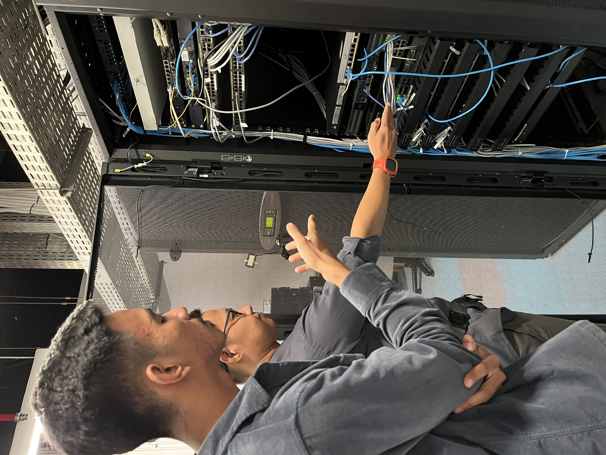
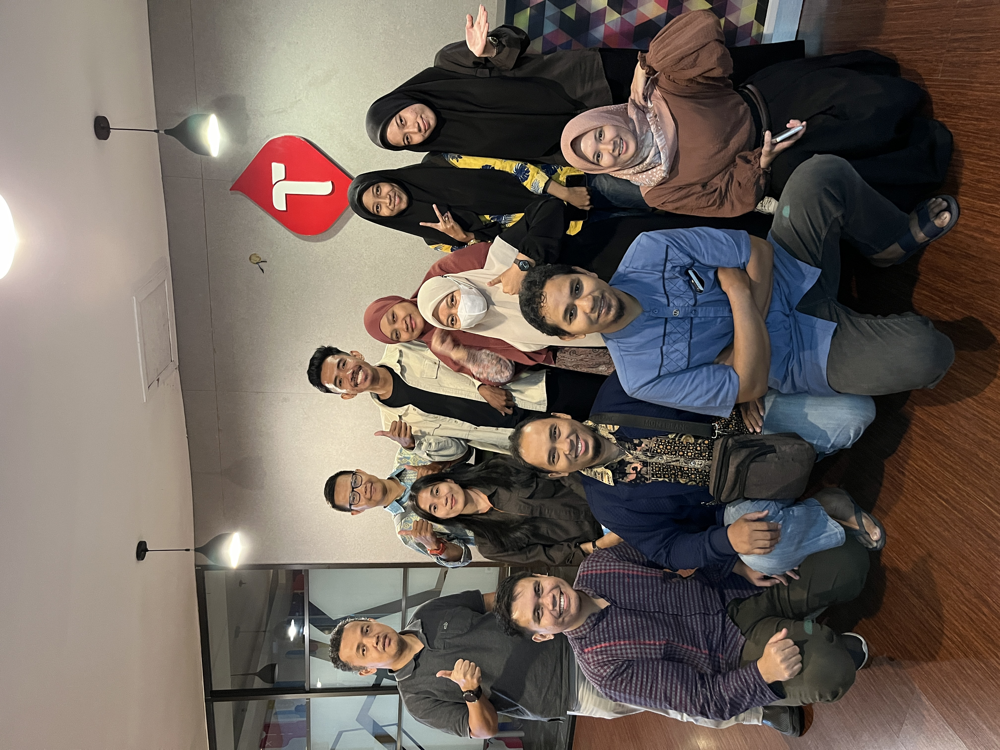
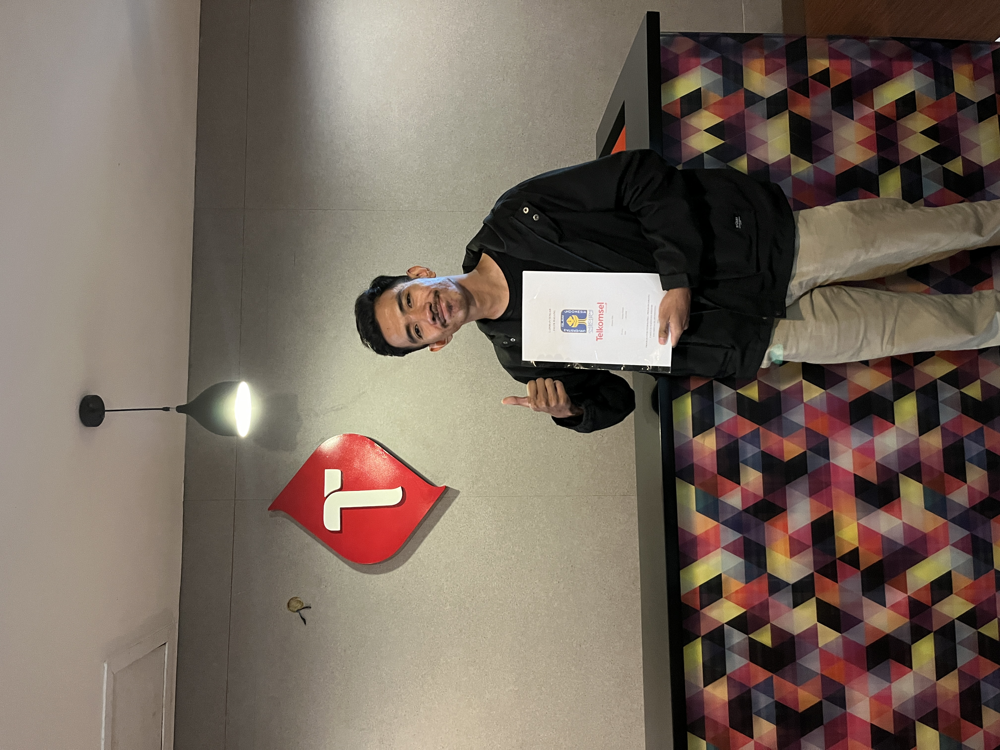

SPERCO
Smart Meeting Transcription
Spoken conversations / Editable transcripts / Meeting minutes
IT Development | Digital Transformation | Process Improvement
SPERCO - Smart Meeting Transcription Web Application
Tools & Skills: Web Application Development, UI/UX Improvement, AI Integration, Problem Solving, System Optimization, User Experience.
SPERCO is a web application designed to simplify meeting documentation by converting spoken conversations into editable and organized text. The application helps users capture discussions, identify speakers, and prepare meeting minutes more efficiently.
Key Contributions
- Digital Solution Development: Contributed to enhancing a web application that simplifies meeting documentation and reduces reliance on manual transcription.
- User Experience Improvement: Redesigned the application interface to make navigation and key features more accessible and user-friendly.
- Feature Enhancement: Developed improvements that help users distinguish between speakers and organize meeting transcripts more clearly.
- Research & Problem Solving: Explored and evaluated different technology solutions to improve transcription quality and application functionality.
- System Improvement: Identified and resolved application issues to support a smoother and more reliable user experience.
Digital Solution & User Experience
Improved the SPERCO web application to provide a more intuitive meeting documentation experience. Focused on simplifying user interactions, organizing transcription results, and enhancing features that help users review and manage meeting records more effectively.
SPERCO
Smart Meeting Transcription
Spoken conversations / Editable transcripts / Meeting minutes
Research & Continuous Improvement
Explored alternative technology solutions, addressed application issues, and refined existing features to improve overall functionality. Focused on translating technical improvements into practical solutions that support everyday work activities.
Project Moments

Server Monitoring & Maintenance

IT Team Collaboration

Final Year Project


Like what you see?
Let’s get started!
 Hire Me
Hire Me
For Your Team!